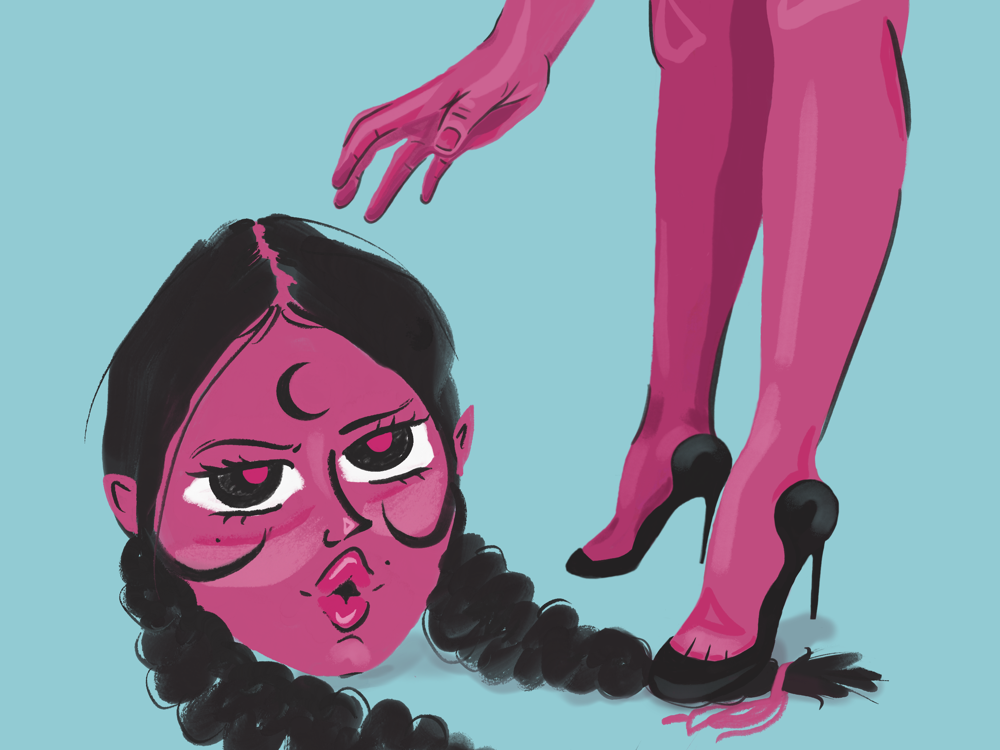

A shot from an angle we don't normally see. There's enough detail in her face that you automatically start filling in the rest. Her expression is unbothered, slightly annoyed, something clearly happened before this moment, but we dropped in too late to know what.
The head and the body have two different minds. The foot on the braid wasn't an accident. You start assigning personas to each one without even meaning to, and suddenly there's a whole tension there, like her mind and her body are in a fight neither of them is willing to lose.

← Back to works